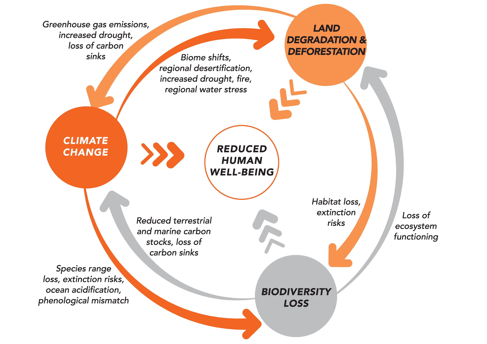
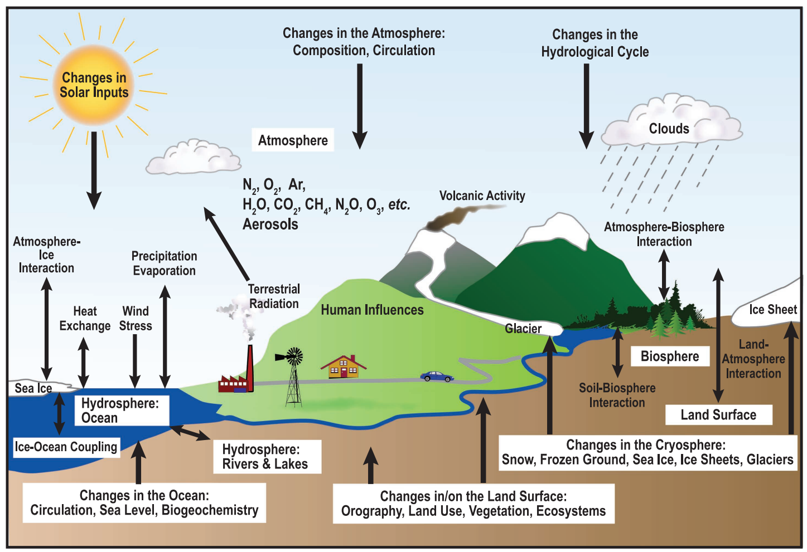
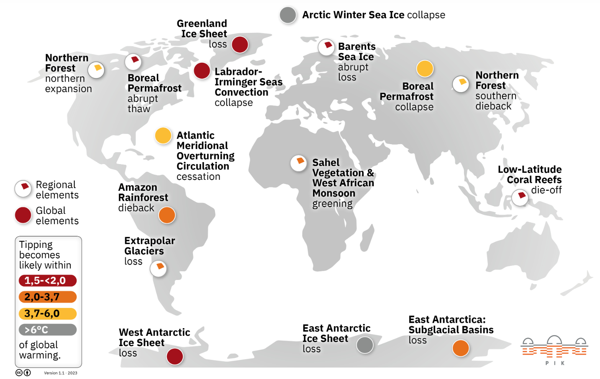
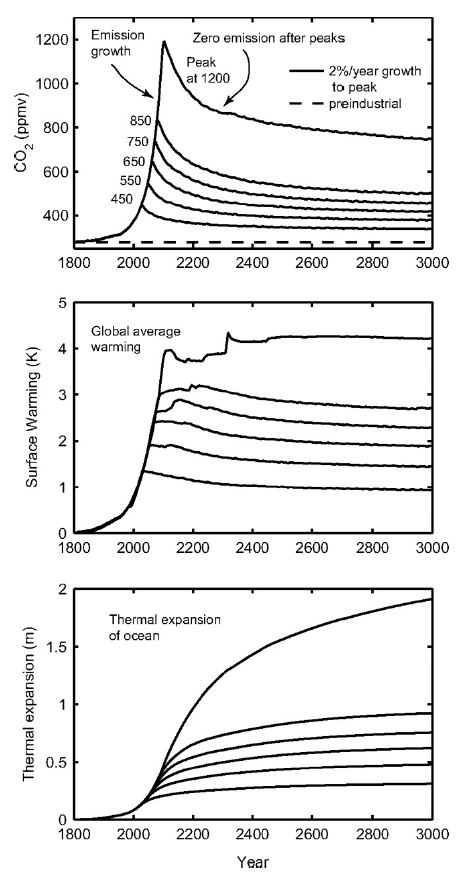
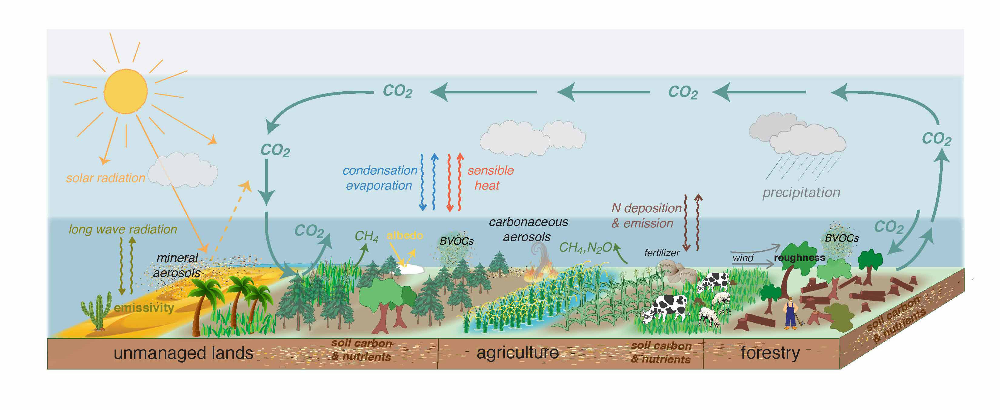
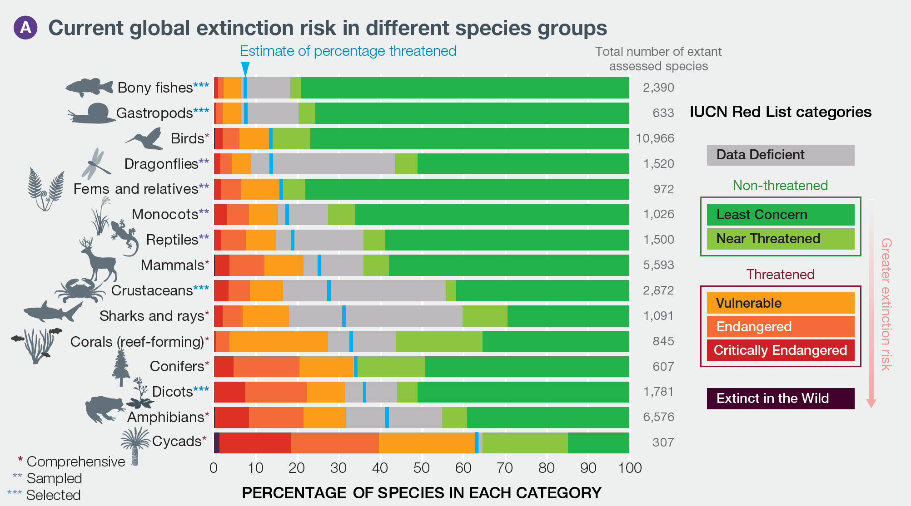
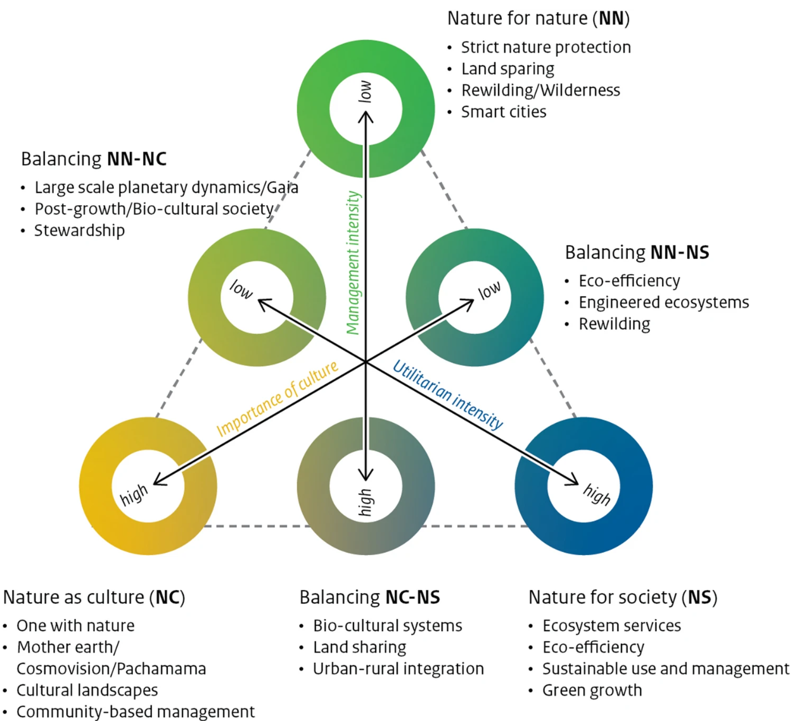
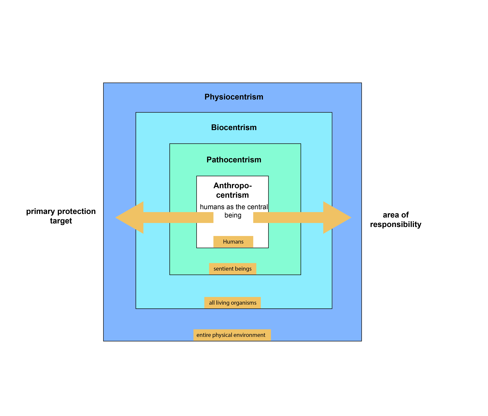

Planetary boundaries
The current era is called the Anthropocene because human activities are exerting an increasingly profound impact on the Earth and its systems. Although this term has not (yet) been recognized as an official geologic or geochronological epoch by geological bodies [@zhongAreWeAnthropocene2024], it is used to describe the enormous human impact on the environment. There is no uniform definition of the origins of the Anthropocene; possible markers include human impact on greenhouse gas concentrations through rice cultivation, the global spread of radioactivity from nuclear testing, or the appearance of plastic particles in geological sediments. The Industrial Revolution is generally considered the start of the Anthropocene.
A quantitative definition of environmental sustainability was proposed by @rockstromPlanetaryBoundariesExploring2009 and @steffenPlanetaryBoundariesGuiding2015, who identified nine planetary boundaries: climate change, biosphere integrity, land-system change, freshwater change, biogeochemical flows, ocean acidification, atmospheric aerosol loading, stratospheric ozone depletion, and novel entities. These planetary boundaries serve as a scientific reference point and show the limits within which our global socio-economic systems must operate to ensure the well-being of humanity (see also the Debates section).
This chapter focuses on three of these boundaries, described here as climate change, land use change, and biodiversity loss. These three crises are mutually reinforcing and form a complex web of interactions.

The climate crisis (climate change)
Climate change – or, to use a term more illustrative of the urgency, the climate crisis – is one of the most pressing issues of our time. It receives much media attention and is exemplary of a “wicked” problem [@hulmeWhyWeDisagree2009, p.9]. It is the focus of the Fridays for Future movement that was initiated by Greta Thunberg, and it is a topic, of discussion at least, on the (global) political stage. While local conditions and natural fluctuations contribute to some uncertainties in climate models and statistics, the scientific evidence clearly shows that rising global temperatures have an enormous impact on environmental sustainability and human well-being. This is why climate change is one of the nine planetary boundaries.
The term climate describes the average state of the atmosphere (temperature, precipitation, humidity, etc.) over a period of at least 30 years at a specific location. By contrast, weather describes the short-term state (i.e. from seconds to weeks) and includes weather phenomena such as thunderstorms or heat waves [@nccsNationalCentreClimate]. The climate system, in turn, encompasses not only the atmosphere but also the hydrosphere (oceans, lakes, rivers, groundwater), the cryosphere (glaciers, snow cover, sea and lake ice, permafrost), the biosphere (living organisms), and the lithosphere (soils or the outermost layer of the earth). In particular, it refers to the physical, biological, and chemical interactions and interdependencies between these five spheres. In addition, the climate system is influenced by radiation from space (see figure below).

Material and energy flows between the various components of the climate system, such as the carbon cycle, can act as feedback mechanisms. We have already learnt about such feedback mechanisms in the chapter on systemic effects (see chapter 2). These can either be positive, if the feedback reinforces the original change, or negative, if the feedback attempts to reverse the original change. Here are examples of a positive and negative feedback effect in the climate system:
Positive feedback: When the Earth’s surface temperature increases, so does water evaporation, creating a positive feedback loop. Water vapour is the most significant greenhouse gas in the atmosphere. As temperatures rise, more water vapour enters the atmosphere, increasing the reflection of heat back to the Earth’s surface and leading to further evaporation. This cycle accelerates warming and atmospheric water vapour accumulation. On Venus, this feedback mechanism intensified the greenhouse effect to the point where all liquid surface water evaporated.
Negative feedback: Increased atmospheric CO2 can enhance photosynthesis, a process known as CO2 fertilization and an example of a negative feedback mechanism. Although an increase in carbon dioxide can cause plants to bind more carbon in biomass than before, it is far from sufficient to compensate for the increasing CO2 content in the atmosphere, which is mainly caused by the burning of fossil fuels and changes in land use. The ability of plants to take up additional CO2 is limited by various factors such as nutrient availability, water resources, and temperature conditions. Therefore, this feedback mechanism is insufficient in compensating for the increase in atmospheric CO2 concentrations caused by human activities.
Positive feedback mechanisms or the failure of negative feedback can lead to significant thresholds being exceeded in the climate system. These thresholds are referred to as tipping points of the climate system and are closely linked to the concept of planetary boundaries (see chapter 2.4 on The debate about the Great Transformation). When these thresholds are exceeded, abrupt and often irreversible changes can occur in the climate system, destabilizing the climate and leading to accelerated climate change. The concept of tipping points emphasizes the urgency of limiting global warming and reducing greenhouse gas emissions. Exceeding these thresholds will make it increasingly difficult to control climate change or minimize its effects. Ultimately, the Earth risks becoming a large greenhouse (Hothouse Earth scenario) (see Figure 3).

A total of 16 tipping points are assumed to exist (Figure 4), including the Siberian permafrost soils or the West Antarctic Ice Sheet. These tipping points have different threshold values, meaning that some will be reached earlier, with less global warming than others. If these tipping points are reached or exceeded, they can trigger self-reinforcing feedback effects that lead to further warming, initiate further tipping points, and intensify climate change. Some of these tipping points are already in a critical state, as explained impressively by Johan Rockström, one of the founders of the Planetary Boundaries concept (https://m.youtube.com/watch?v=Vl6VhCAeEfQ). In the Amazon, for example, some areas now emit more CO2 than they absorb – becoming carbon sources rather than sinks – due to forest fires, climate-change-induced water stress, and deforestation (see Land use chapter) [@gattiAmazoniaCarbonSource2021; @harrisGlobalMapsTwentyfirst2021]. Consequently, the Amazon is already in transition and losing resilience [@floresCriticalTransitionsAmazon2024]. Another worrying and very real tipping point is the Atlantic Meridional Overturning Circulation, or AMOC (@rahmstorfAtlanticOverturningCirculation2024; https://www.youtube.com/watch?v=ZHNNW8c_FaA). The AMOC is nearing its tipping point (@vanwestenPhysicsbasedEarlyWarning2024), with projections suggesting it could collapse as early as the middle of this century (@ditlevsenWarningForthcomingCollapse2023). A collapse would lead to increased European heat waves and sea-level rise along the north-eastern US coast (@@rahmstorfAtlanticOverturningCirculation2024).

But what is causing the Earth to warm and climate change to occur? In addition to natural causes of climate change such as geological, long-term causes (Earth’s axial rotation, Milanković cycles, volcanic eruptions), the primary driver of global warming is the greenhouse gas effect. The greenhouse gas effect is a process where short-wave solar radiation enters the Earth’s atmosphere and is re-emitted from the Earth’s surface as long-wave infrared radiation. Greenhouse gases – such as carbon dioxide, methane, and water vapour – absorb some of this infrared radiation and emit it in all directions, causing some of the heat to return to the Earth’s surface. Without this effect, the Earth would be too cold to support life. Today, however, there are too many greenhouse gases in the atmosphere due to anthropogenic emissions, causing the earth to warm up.
The largest share of human CO2 emissions, around ¾ of the global total, originates from energy production, i.e. primarily electricity and heat generation (Figure 5). This is largely due to the combustion of coal, gas, and oil, with emissions from industry (comprising 24.2% of the global total), transport (16.2%), buildings (17.5%), and agriculture (18.4%). The main drivers of agricultural emissions are livestock farming, deforestation for agricultural land, and the use of nitrogen fertilizers on agricultural soils.
Within the transport sector, air traffic accounts for 1.9% of global emissions (see figure below). In Switzerland, however, flights account for about 11% of national emissions. These flight emissions are largely attributable to international air traffic (@bundesamtfuerumweltbafuKenngroessenZurEntwicklung2025), although the calculations exclude Basel-Mulhouse Airport, which is located on French soil. Despite this evidence, Switzerland has not yet introduced a CO2 tax on kerosene (the main component of aviation fuel), although there is one on fossil fuels such as heating oil and natural gas. It should however be noted that climate impact is not solely determined by greenhouse gas emissions (@allenSolutionMisrepresentationsCO2equivalent2018; @leeContributionGlobalAviation2021; @neuAuswirkungenFlugverkehrsemissionenAuf2021). The warming potential of air travel can thus be significantly higher than indicated by greenhouse gas emissions alone, as non-CO2 effects from flights – such as water vapour, nitrogen oxides (NOx), and soot – also affect the climate (@leeContributionGlobalAviation2021).
Globally, air travel emissions have more than doubled since 1990, driven primarily by international flights. Despite a sharp drop in the number of flights in 2020 due to the pandemic, flight emissions have rebounded and are projected to surpass 2019’s record levels in the coming years.

Recent calculations and climate reports indicate that the Earth’s temperature has risen by around 1.2°C in the last 10 years (2014–2023) compared to pre-industrial levels (1850–1900). In addition, 2023 was the warmest year on record, with a global surface temperature of 1.45°C above the pre-industrial baseline. This may not sound like much, but it represents a substantial heat increase, given the oceans’ vast size and heat storage capacity. (https://www.un.org/sites/un2.un.org/files/temperaturerise_may2024.pdf) (https://ourworldindata.org/ghg-emissions-by-sector)

The Paris Climate Agreement, adopted in December 2015, was the first international treaty where industrialized and emerging countries jointly pledged to curb greenhouse gas emissions. Its core objective is to limit global temperature rise to a maximum of 2°C, with efforts to pursue a 1.5°C limit, relative to pre-industrial times. In 2018, the Intergovernmental Panel on Climate Change (IPCC, see box) published a Special Report containing some startling facts: Most notably, that we only have few years left – until 2030 – to avoid exceeding 2°C. The next major decision in international efforts that built on the Paris Climate Agreement was the 2022 climate conference, COP 27. At COP 27, signatories agreed to establish the Loss and Damage Fund, a result of decades of prior discussion, designed to help developing countries to receive financial support after extreme weather events.
The Intergovernmental Panel on Climate Change (IPCC), established in 1988 by the United Nations and the World Meteorological Organization, synthesizes scientific research on climate change for policymakers worldwide. Its periodic IPCC reports provide a comprehensive assessment of the current state of knowledge on climate change, including the physical foundations, impacts, risks, and adaptation strategies. These reports are based on thousands of studies and are recognized as the most authoritative source of information on climate change. The IPCC reports serve as the basis for international negotiations and national climate policies, including the Paris Agreement of 2015.

But what will it take to prevent the temperature from rising by more than 1.5 degrees? A whole lot. Anthropogenic CO2 emissions must fall by 45% between 2010 and 2030, and net CO2 emissions must fall to zero by 2050. While we are adopting greener technologies for marginal activities like car purchases or building efficiency, we still risk neglecting the serious threat posed by the carbon that is already in the atmosphere. It’s important to distinguish between ongoing emissions (flow) and accumulated atmospheric carbon (stock). Flow plays a subordinate role for the planet – it’s the stock that drives global warming. Climate change is therefore primarily a stock problem, rather than a flow problem. This is a challenging concept, not only for laypeople. Indeed, @stermanUnderstandingPublicComplacency2007 observed that most adults had difficulty in grasping the stock aspect of climate change.

An effective mental model is the bathtub analogy: if the inflow of water through the tap (i.e. our emissions, or flow) exceeds the outflow of water through the drain (carbon absorption by rainforests, oceans, etc.), the water level (the atmospheric carbon stock) increases. The past five years, and twenty of the last twenty-two, have been the warmest on record. This warming trend is a direct result of the rising water level in that “bathtub”.
Impacts: Climate change is expected to have a range of direct and indirect impacts, some of which are already occurring. These include sea level rise, shrinking glaciers, threats to water and food security, an increase in extreme weather events, adverse health effects related to temperature, heatwaves, droughts and excessive precipitation, wildfires, and an increase in geomorphological activities and thus natural hazards due to permafrost thaw.
Land use change
Land use change, like deforestation for agriculture or urban expansion, has a significant impact on the environmental dimension of sustainability. Land use change threatens biodiversity and disrupts ecosystem functions. It can also increase greenhouse gas emissions, alter water cycles, or deplete valuable agricultural land. This can result in a reduction of ecosystem services (see chapter on ecosystem services), ultimately restricting human well-being. Land use change is one of the nine planetary boundaries that has already been exceeded, according to @richardsonEarthSixNine2023.
Some key definitions are needed to understand land use change:
Land cover refers to the characteristics of the land surface and its immediate subsurface, including biota, topography, and human structures (Lambin et al. 2000: 322).
Land use is the way in which humans use land cover (Lambin et al. 2000: 322).
Land use change represents the change from one land use to another(Lambin et al. 2000: 322).
Land degradation means “reduction or loss, in arid, semi-arid and dry sub-humid areas, of the biological or economic productivity and complexity of rainfed cropland, irrigated cropland, or range, pasture, forest and woodlands resulting from land uses” (UNCCD, 1994: 4).
Land systems “represent the terrestrial component of the Earth system and encompass all processes and activities related to the human use of land, including socioeconomic, technological and organizational investments and arrangements, as well as the benefits gained from land and the unintended social and ecological outcomes of societal activities” (Verburg et al. 2013: 433).
Land can also be understood as a socio-ecological system (Chapin et al. 2006) in which the social and ecological subsystems interact and depend on each other. This system is characterized by mutual feedback, with humans considered integral components of nature(Verburg et al. 2015).
Various drivers, i.e. reasons or causes, are responsible for the occurrence of land use change. These factors vary depending on the type of land use. For example, the main drivers of global deforestation, a form of land use change, are commercial agriculture, slash-and-burn agriculture, commercial forestry, urbanization, and forest fires (Curtis et al. 2018). Deforestation has already led to an alarming decline in biodiversity (see next chapter) and the disruption of carbon cycles (see previous chapter or box). For example, the Agriculture, Forestry, and Other Land Use (AFOLU) sector is a major contributor to global anthropogenic greenhouse gas emissions, accounting for approximately 13% of CO2, 44% of CH4, and 81% of N2O emissions (IPCC, 2019). These interactions between climate change and land use/land use change show that land systems and climate systems should be considered systemically, rather than in isolation (Richardson et al. 2023). Figure X is a schematic representation of these interactions between land and greenhouse gases.

Beyond their impact on climate-relevant greenhouse gas flows, land use and land use change also disrupt other biogeochemical material cycles, such as nitrate, phosphorus, or sulphur cycles, linking them to another already-exceeded planetary boundary, that of biogeochemical flows (Richardson et al. 2023). A classic example of this is eutrophication, a process that occurs when agricultural fertilizer, such as phosphorus, enters nutrient-poor waters and leads to excessive growth of algae, known as algal blooms. As these blooms decompose, they deplete the oxygen level, ultimately restricting or even preventing aquatic life (Smith et al. 2006; Galloway et al. 2008).
In the tropics, the forms of agriculture best adapted to local conditions (i.e. without fertilizers or other inputs) are agroforestry and slash-and-burn agriculture. Agroforestry is a permanent land use system in which annual crops are planted alongside trees, or where perennial crops (e.g. manioc, vanilla, bananas, and lychee) are planted together. By contrast, slash-and-burn agriculture, also known as shifting agriculture, refers to a land use system where a different area is cleared each year and a crop such as maize is grown, while the previously cultivated fields are left fallow to allow nutrients to rebuild.
As mentioned above, slash-and-burn agriculture, such as that practiced in Madagascar, is one of the main causes of global deforestation, which is why governments and NGOs have been fighting slash-and-burn agriculture since colonial times. One challenge with slash-and-burn agriculture is that when fallow periods become too short due to a lack of land, farmers expand into unused forest, clearing it to maintain the cycle of slash-and-burn. This deforestation results in substantial biomass that needs to be burnt. In Madagascar, for example, more than 6,000 burnt areas were recorded within one month from mid-September to mid-October 2023.
This is why deforestation in Madagascar is blamed on the local population. But slash-and-burn agriculture is a necessary survival strategy for local inhabitants, who have few alternatives and rely on it to secure land for future generations. This conflict of objectives is specifically a land use conflict.
Another example of a land use conflict can be observed in Switzerland, in a conflict of interest between a decentralized renewable energy project and landscape services (see Kienast et al. 2017). In 2022, the Swiss government launched a “solar offensive” in the form of a project called “Solar Express”. The aim was to promote alpine photovoltaic systems through high subsidies that would cover up to 60% of investment costs. In the summer of 2024, the groundbreaking ceremony for the first large-scale plant, covering an area of 300,000 m2, took place in Sedrun, in Switzerland’s easternmost canton of Graubünden. However, such large-scale solar plants clash with other land uses, particularly affecting agricultural land, nature conservation areas, and tourist regions. Solar installations alter landscapes and could affect flora and fauna, leading to fears among farmers and nature conservation organizations about the loss of valuable farmland and biodiversity areas. At the same time, supporters of renewable energies are calling for the rapid implementation of these projects, to reduce Switzerland’s dependency on fossil fuels and protect the climate. This highlights the tension between the need for renewable energy on the one hand, and the desire to preserve the landscape and the environment on the other.
Deforestation in tropical regions is a form of land use change that is influenced not only by local needs, but also by international decisions and demands (Curtis et al. 2018). This suggests that preventing deforestation must be addressed at both local and international levels (DeFries et al. 2010). However, distant factors influence not just deforestation, but land use change in general (Meyfroidt et al. 2013). In science, such phenomena and processes are referred to as telecoupling (Liu et al. 2013). Telecoupling describes the socio-economic and ecological interactions between distant human and natural systems, analysing how actions in one place (the sending system) can affect another place (the receiving system). For example, new EU regulations require that products entering the EU market from the end of 2024 are deforestation-free (Regulation on Deforestation-free products - European Commission (europa.eu). These regulations are likely to have significant ecological (and social) effects in the countries of cultivation (Coenen et al., 2023).
####Land rights and land tenure Land use and land use change are closely linked to issues of land rights and land tenure, as these factors largely determine who is authorized to use land, and how it is used. Secure land tenure and clearly defined land rights are crucial for sustainable land use practices, as they incentivize long-term investment in land management and promote the protection of resources. Insecure or unclear land rights, on the other hand, can lead to land use changes that harm the environment, such as uncontrolled deforestation. These issues become particularly explosive in the context of land grabbing, in which large areas of land are acquired by foreign (or even domestic) investors, often without adequate consultation with or compensation for the local population. Land grabbing can lead to conflicts that undermine existing land rights and change land use in a way that jeopardizes environmental and social sustainability.
This chapter has shown that land, land use, and land use change are a multifaceted topic. Underscoring the importance of this issue, Meyfroidt et al. (2022) summarized ten facts about land systems for sustainability (Figure 10, left), grounded in empirical research. These facts, in turn, lead to ten associated challenges (see Meyfroidt et al. 2022). For example, Fact 2 (“land as complex systems”) leads to the challenge that the consequences of interventions in land systems are difficult to predict and understand, which makes it difficult to develop effective measures or policies regarding land use. Several issues discussed in this chapter align with these facts, such as telecoupling and Fact 5, “Distant connections”.

Another example of land use change and its far-reaching implications is commercial land investment in Laos. The Lao People’s Democratic Republic is a mountainous, landlocked country with a high poverty rate and a few small urban centres. Situated tween China, Vietnam, Thailand, Cambodia, and Myanmar, Laos emerged from its communist isolation in the 1990s. The country is rich in natural resources such as land, forests, and minerals. To promote national economic growth, the Government of Laos is pursuing a strategy of “turning land into capital”, i.e. converting “unused” land into productive land in the hope of achieving rural development through spillover effects. This strategy is mainly implemented through commercial land investments, where the government grants land concessions to domestic and foreign investors.
But to what extent does this policy actually contribute to sustainable development? To find out, scientists from the Centre for Development and Environment (CDE) worked with the Government of Laos to take stock of land concessions and examine the quality of the investments. A national digital information system was developed, enabling Laos to manage its land concessions effectively. The system also revealed that not all investors fulfil their promises, calling into question the sustainability of this land use strategy.
The changes in land use towards banana plantations, other tree plantations such as rubber plantations, mines, and hydropower projects have led, among other things, to a loss of forest areas, with around a third of all concessions being granted within national forest areas. This also led to a loss of important ecosystem services and a reduction in biodiversity. Beyond the ecological impact on the local environment, the land investments also had socio-economic consequences. Despite increased financial income for some, the land investments negatively affected the well-being of the local population in many areas, reducing food security and access to land and natural resources vital to subsistence-oriented livelihoods.
Nanhthavong et al. (2021), Hett et al. (2020), CDE Policy Briefs.
Biodiversity loss
Biodiversity is defined as the variety of life in all its forms, ranging from genes to species to ecosystems (CBD, 1992). It is an essential foundation for the well-being of humankind and thus a substantial component of environmental sustainability, forming the basis for numerous ecosystem services (Haines-Young and Potschin-Young, 2010) or Nature’s Contribution to People (Antunes et al. 2024). Biodiversity is also closely linked to several of the planetary boundaries, especially land-system change and biosphere integrity (Steffen et al. 2015). It is clear that an unchecked loss of biodiversity could trigger tipping points in ecosystems, disrupting the Earth’s balance and severely impairing the ability of our planet to support human life. The protection and restoration of biodiversity is therefore considered key to a sustainable future.
Yet biodiversity is currently in an alarming state (see infobox below). Worldwide, species diversity has been declining for several decades (Butchart et al. 2010; Díaz et al. 2019), a downward trend that is predicted to continue (Díaz and Malhi, 2022). As a result, there is already discussion of a sixth mass extinction (Ceballos et al. 2020). To counteract this development, the Convention on Biological Diversity (CBD) was ratified at the 1992 Rio Earth Summit (CBD, 1992), with Swiss participation. This legally binding agreement means that if Switzerland sends delegates to subsequent conferences, any new provisions must be legally implemented.
Biodiversity monitoring is an important tool for tracking changes in biodiversity. The International Union for Conservation of Nature (IUCN)’s Red List of Threatened Animal and Plant Species, maintained since 1964, plays a particularly important role in this. It categorizes the status of a species into one of nine categories, from “not endangered” to “extinct”. Figure ?@fig-IUCN-red-lis, for example, shows the percentage of species in each category at the global level. The same categories are also used in Switzerland. Such databases, among other benefits, help improve policymaking and nature conservation planning, and facilitate more appropriate allocation of (financial) resources in research and society. Despite the extensive and established monitoring of species, cautious studies assume that only between 1.5% and 18% of terrestrial vertebrate species on our planet have been identified and described (cf. Moura and Jetz, 2021).

Despite such international efforts, global biodiversity has been and continues to be under unprecedented pressure. This is due to direct and indirect drivers (Figure 12) that have significantly accelerated over the past 50 years (IPBES, 2019: 25). For example, human activities such as land use change (see Chapter XX) have drastically altered and reduced natural habitats, leading to a significant loss of species and genetic diversity (Pereira et al. 2010). In addition, species loss is also closely linked to anthropogenic climate change (see chapter), as rising temperatures are making or will make many areas and regions uninhabitable for certain species (WWF, 2022: 16). This decline jeopardizes not only the stability of ecosystems, but ultimately also the long-term sustainability of human societies (Cardinale et al. 2012).

The latest major international agreement, the Kunming-Montreal Global Biodiversity Framework (UNEP-CBD, 2022), sets new goals and targets (Figure 13) aimed at making global biodiversity conservation more focused. A key target is Target 3, which specifies that by 2030, at least 30% of all terrestrial and marine areas, particularly those of high ecological importance, must be conserved through a system of protected areas. Studies have shown that well-managed protected areas can effectively conserve biodiversity. However, as of 2024, only 16.32% of terrestrial areas and 8.35% of marine areas were protected (Protected Planet, 2025. More radical approaches even call for 50% protected areas (the Half Earth Project).

However, studies and scientists have voiced concern regarding the effectiveness and (environmental) justice of protected area and half-earth approaches (see Büscher et al. 2017; Schleicher et al. 2019). Despite an increase in the surface area covered by protected areas in recent decades, biodiversity continues to decline. On the one hand, percentage-based targets can create false incentives, leading governments to designate nature reserves in areas where they provide little benefit or serve only as paper tigers (Visconti et al. 2019). On the other hand, designation of strict protected areas often deprives local population groups, especially Indigenous groups, of access to the areas on which they depend for their livelihoods – or it forces them to resettle. Studies have shown that the participation of local population groups is a decisive factor for the long-term conservation and integrity of protected areas and thus of biodiversity (Andrade & Rhodes, 2012). IPBES (2019: 32) also recognizes the importance of Indigenous and local communities in the conservation of biodiversity and ecosystem services. A study by Fa et al. (2020), for example, shows how involving Indigenous communities can benefit nature conservation. The study illustrates that Indigenous territories worldwide – and especially in the tropics – play a crucial role in protecting biodiversity and curbing deforestation. The study compares deforestation rates in different protected areas and shows that deforestation is significantly lower in areas under Indigenous administration than in state-protected regions.
The Intergovernmental Science–Policy Platform on Biodiversity and Ecosystem Services (IPBES) is an independent intergovernmental body established by various countries to strengthen the science–policy interface on biodiversity and ecosystem services for the conservation and sustainable use of biodiversity, long-term human well-being, and sustainable development. It was founded on 21 April 2012 in Panama City by 94 governments. Secretariat services to the IPBES are provided by the United Nations Environment Programme (UNEP), although IPBES is not a UN body. Today, IPBES, which developed the NCP concept, is considered a counterpart to the IPCC (IPBES secretariat, 2017)
Like land use change (reference) and ecosystem services (reference), biodiversity protection and nature conservation are caught between various values and visions, which can lead to conflicts of interest among various stakeholders. These values and the resulting approaches are generally categorized into three types: intrinsic, instrumental, and relational values (Durán et al. 2023): in other words, “nature for nature”, “nature as culture”, “nature for society” (Figure 14). The concept of ecosystem services, for example, falls under “nature for society”, as it corresponds to a utilitarian view of nature in which society derives the greatest possible benefit from nature (without harming it). By contrast, a nature park that prioritizes strict nature protection or the rewilding of areas, for example, can be classified as embodying intrinsic values, because human intervention and thus its impact on nature is minimized. This “nature for nature” narrative also extends to concepts like smart cities, for example, as these seek to limit human activity to urban areas as efficiently as possible. The “nature as culture” vision, for its part, portrays a world where values such as reciprocity and harmony define human relationships with nature at every level. Here, biological diversity and cultural diversity are jointly preserved and managed within closely linked biocultural systems. These systems are supported by local, self-determined governance structures that respect Indigenous sovereignty and local identities. Economic exchange prioritizes the social value of goods over their monetary value. This vision includes, for example, local and decentralized food production as well as communities that operate in a resilient, biocultural network with deep spiritual connections to nature.

The diverse values associated with biodiversity and nature – and to what extent they should be protected – therefore require a normative assessment. They are based not only on empirical systems knowledge but also on ethical principles, as explained at the start of Chapter 3 (See Chapter 3.1 Normative Dimension of Sustainability).
As we have seen, and as with other sustainability challenges and dimensions, there is no established consensus on how to best implement and achieve sustainability in the environmental dimension. In this dimension, too, sustainable development remains a social negotiation and decision-making process. Given the diversity of different perspectives and interests of various stakeholders, preferences regarding approaches and measures also vary. To select suitable measures and harmonize the various levels of responsibility (Figure 15), we can, for example, refer back to Hans Jonas’s (1979) ethics of responsibility, which we learned about at the start of the book (see chapter X). Integrating these various areas of responsibility can foster a holistic and sustainable ethic that appropriately considers the needs and interests of all aspects of life and nature.
